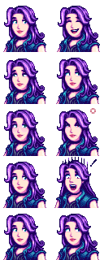

Modding:Editing XNB files
← Index
This page explains how to edit the game files to change in-game data, images, and maps.
Intro
What are XNB files?
The game stores data, maps, and textures in a compressed format with the .xnb file extension inside its Content folder. For example, Abigail's portrait shown during dialogue is from Content\Portraits\Abigail.xnb. Unpacking that file gives you an Abigail.png like this:

How do I get my changes in the game?
There are three ways to get your changes in the game:
- Create a Content Patcher content pack. This lets you change the game's XNB data with zero programming (just editing a JSON file) and without replacing the actual game files.
- Create a SMAPI mod and use the Content API. This requires programming, though.
- Create an XNB mod by replacing the original game files. This is no longer recommended and not documented here; see using XNB mods for more info.
Where can I get help?
The Stardew Valley modding community is very welcoming. Feel free to ask the community for help.
Unpack game files
You can't edit an .xnb file itself, you need to edit the file that's inside it. Pulling out that inner file is called unpacking, and putting it back is called packing. There are two main XNB unpackers available.
StardewXnbHack
StardewXnbHack is an open-source and crossplatform tool for unpacking XNB files. It can't pack files back into .xnb, but you rarely need to.
To unpack files:
- Install SMAPI.
- Download StardewXnbHack. (Make sure you download the file for your OS, such as StardewXnbHack-*-for-windows.zip, not the source code!)
- Unzip the download into your game folder, so
StardewXnbHack.exeis in the same folder as StardewValley.exe
StardewValley.exe - Double-click
StardewXnbHack.exe(on Windows),StardewXnbHack.sh(on Linux), orStardewXnbHack.command(on MacOS) to unpack your game's entire Content folder.
That's it! It'll unpack the files into a Content (unpacked) folder. The unpacked files will already be compatible with Content Patcher.
xnbcli
xnbcli is an open-source and crossplatform tool for packing and unpacking XNB files.
This supports XNB files for other games too, but it can't handle some files specific to Stardew Valley. StardewXnbHack is recommended instead.
| Details |
|---|
Special notes:
To unpack files:
Troubleshooting:
|
Pack game files
There's no need to repack game files if you're using Content Patcher! Just use the .json, .png, .tmx, or .tbin file directly in your content.json.
If you really want to repack the files, you'll need to use xnbcli:
- Find the file you want to repack.
- Copy it into xnbcli's unpacked folder.
- Double-click pack.bat (Windows), pack.sh (Linux), or pack.command (Mac).
- Move the repacked .xnb file back to the original location.
Making changes
Data
Each data XNB has its own format. See the documentation at Modding:Index#Advanced topics.
Images
A few definitions:
- A spritesheet is a PNG file containing small images (usually in a regular grid pattern). Each square in the spritesheet's grid pattern is called a sprite. For example, each in-game item has a sprite in Content\Maps\spring_objects.xnb.
- A tilesheet is a synonym for spritesheet when used for map tiles. In a tilesheet, each square is called a tile and is 16×16 pixels.
- A portrait is a sprite from the Content\Characters\*.xnb spritesheets.
Spritesheets are easy to edit:
- Unpack the file you want to change.
- Open the unpacked .png file in an image editor (like Paint.NET on Windows, or GIMP on Windows/Linux/Mac). Note that it's important to use an image editor that can handle transparency (a.k.a. an alpha channel), unlike Microsoft Paint.
- Make changes directly to the image.
- Repack the file and copy it back to the original location.
That's it! You can launch the game to see your changes.
Maps
See Modding:Maps.
Content editing
Note that prices for software listed below are subject to change.
Pixel Art software
| Software | Price (USD) | OS | Notes |
|---|---|---|---|
| Aseprite | $19.99 | Windows, macOS, Linux | Free if you compile yourself from the source code |
| Photoshop | $9.99/mo | Windows, macOS | Subscription based service |
| PAINT.NET | Free and $6.99 on Microsoft Store | Windows | |
| GIMP | Free | Windows, macOS, Linux | |
| Krita | Free and $9.99 on Steam | Windows, macOS, Linux | |
| Pyxel Edit | $9.00 | Windows | Currently in beta, subject to a price increase upon full release |
| Pixel Studio Android or Pixel Studio Steam | Free - In App Purchases on Android | Android, Windows |
Text editing software
| Software | Price (USD) | OS | Notes |
|---|---|---|---|
| Sublime Text | $99.00 | Windows, macOS, Linux | Unlimited free trial |
| Notepad++ | Free | Windows | |
| Visual Studio Code | Free | Windows, macOS, Linux |